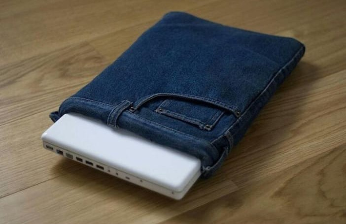

KOLEKSI PRODUK / 06
Tas Laptop dari Celana Jeans Bekas

Ulasan Produk
Tas laptop dari celana jeans bekas merupakan kerajinan daur ulang yang memanfaatkan pakaian bekas menjadi barang baru yang bermanfaat. Bahan jeans dipilih karena cukup kuat dan tahan lama. Tas ini dilengkapi dengan lapisan kain dan busa sebagai bantalan untuk membantu melindungi laptop dari goresan dan benturan ringan.
Selain mengurangi limbah tekstil, produk ini juga dapat menghemat biaya dan memiliki desain yang unik.
Alat dan Bahan
- Celana jeans bekas.
- Busa bekas untuk bantalan.
- Kain bekas untuk lapisan dalam.
- Ritsleting bekas.
- Benang jahit.
- Tali tas dari kain bekas (opsional).
- Gunting kain.
- Jarum jahit.
- Penggaris atau meteran.
- Pensil kain.
- Mesin jahit (jika tersedia).
Langkah Kerja
- Siapkan celana jeans bekas, lalu cuci dan keringkan.
- Ukur laptop untuk menentukan ukuran tas.
- Siapkan potongan kain jeans sesuai ukuran tas dengan ruang tambahan untuk jahitan.
- Potong busa dan kain pelapis sesuai ukuran jeans.
- Susun busa dan kain pelapis pada bagian dalam jeans.
- Jahit sisi kain hingga membentuk tas dengan bantuan guru atau orang dewasa.
- Pasang ritsleting pada bagian atas tas.
- Tambahkan tali tas jika diperlukan.
- Rapikan jahitan dan periksa kekuatan tas.
- Periksa ukuran tas agar sesuai dengan laptop yang akan digunakan.
Catatan: Gunakan jarum dan mesin jahit dengan hati-hati. Mintalah bantuan guru atau orang dewasa saat proses menjahit, terutama ketika menggunakan mesin jahit.
Estimasi Biaya
A. Biaya Alat
Alat : Rp 0
B. Biaya Bahan
| Nama Bahan | Harga |
|---|---|
| Celana jeans bekas | Rp 0 |
| Busa bekas | Rp 0 |
| Kain pelapis bekas | Rp 0 |
| Ritsleting bekas | Rp 0 |
| Benang jahit | Rp 3.000 |
| Tali tas bekas | Rp 0 |
| Total | Rp 3.000 |
C. Harga Jual
Harga jual tas laptop dari celana jeans bekas diperkirakan sebesar Rp 18.000 per unit.
D. Laba
Laba bersih per unit = Harga Jual - HPP
Rp 18.000 - Rp 3.000 = Rp 15.000 per unit.
Produk Kreatif dari Barang Bekas
Barang bekas tidak selalu menjadi sampah. Dengan kreativitas, barang yang sudah tidak digunakan dapat diolah menjadi sesuatu yang memiliki manfaat dan nilai jual.
Kembali ke Produk